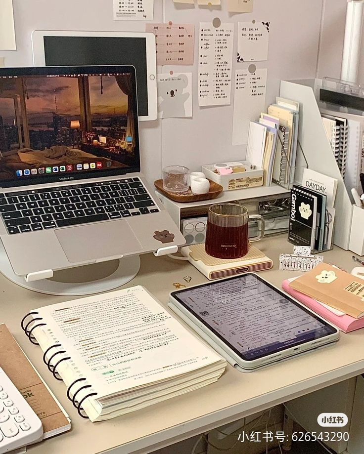
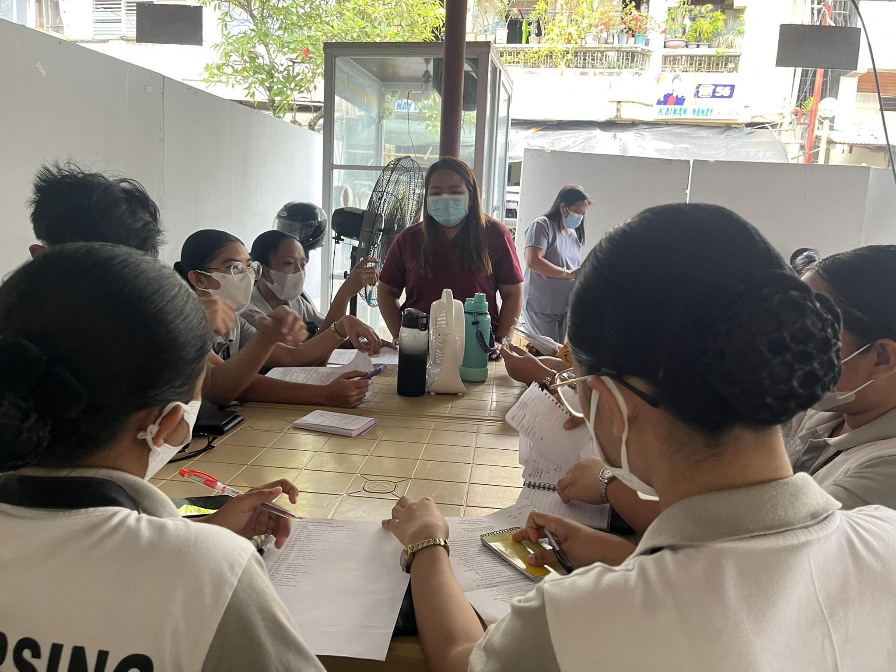
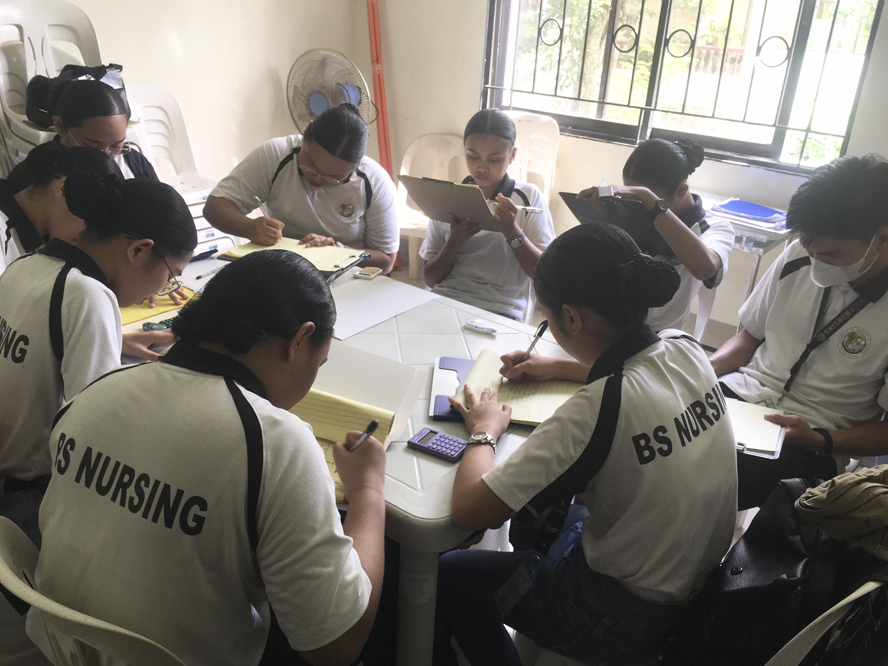

The most common classes taken in nursing school for the first year level include:
Anatomy and Physiology
Fundamentals of Nursing Practice
Health Education
Microbiology & Parasitology
Biochemistry
Health Assessment
1. Be organized
2. Stay engage in class
3. Have an advance reading about the topic. Surprise quiz is very common in nursing.
4. Use mnemonics to help remember essential information

5. Know and develop your learning style
6.Choose your friends wisely
7.Learn to love the up's and down's in nursing
8.Don't forget to take a break and have fun!